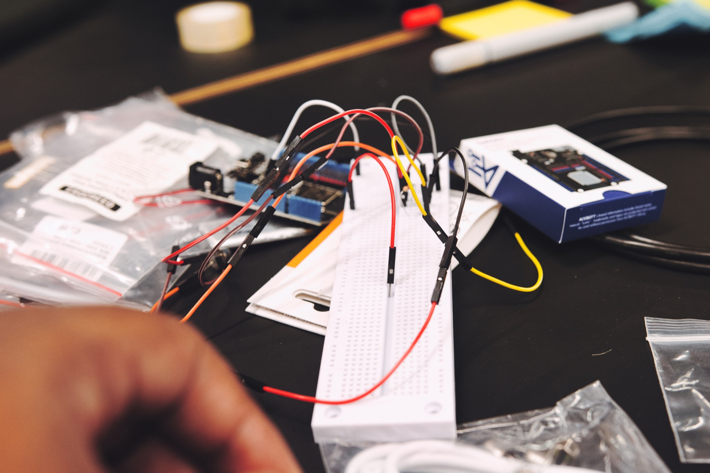
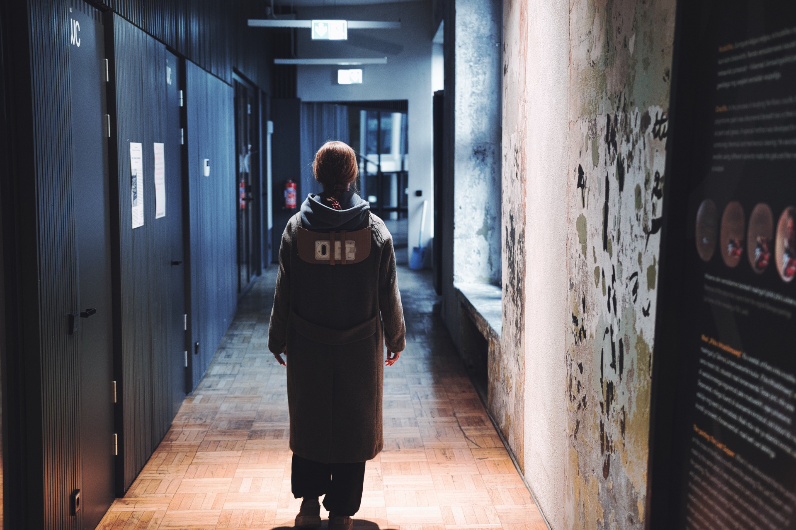
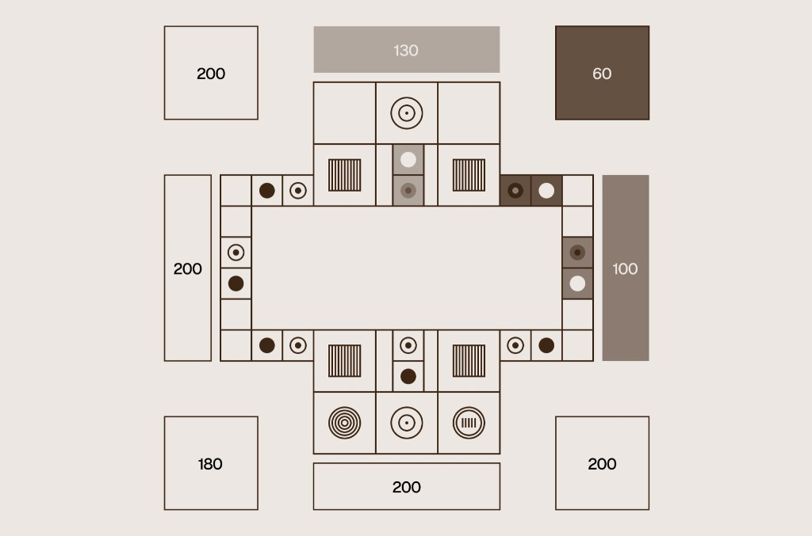
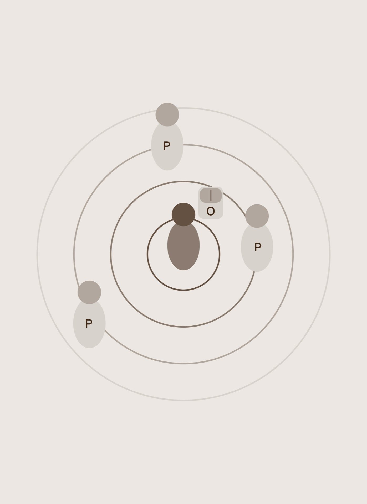
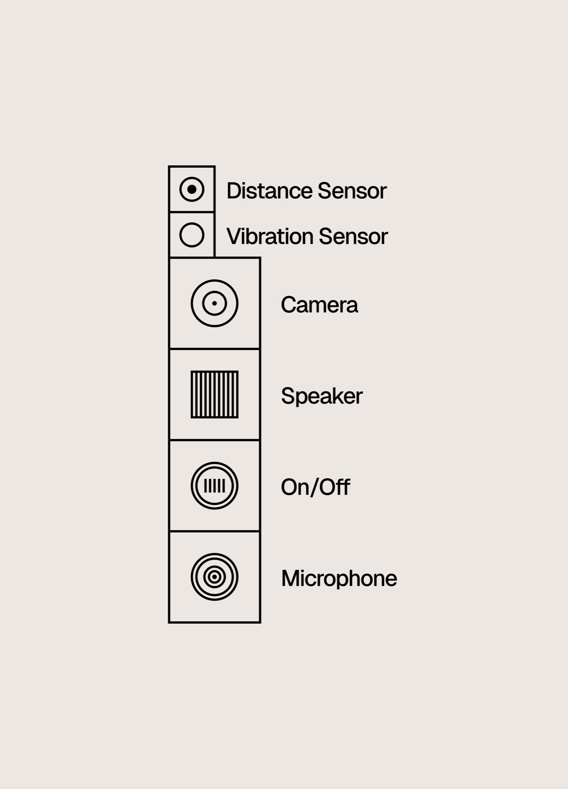

Are ears and eyes necessary for spatial orientation?
Orientation should not be a privilege.
A white cane tells you what's on the ground. It can't see the sign at chest height, the person approaching from behind, or the crowd closing in. That gap has been unsolved for decades.
Every day, millions of people navigate cities with a tool designed in the 1930s. Solutions have emerged since, but most rely on audio feedback, look clinical, or aren't built for real life. The result is a constant state of alertness that never fully switches off. 54% experience a head-level collision at least once a year. 43% permanently change the way they walk afterward. What if your body could simply feel what your eyes can't see?

We went looking for answers. We found something more important.
The greatest sacrifice is the renunciation of solitude.
The research kept returning to one word. not safety, not navigation. Freedom. The freedom to walk alone, without running a constant calculation in your head.
In a world built for sighted people, blindness forces a life marked by uncertainty. Not occasionally — every single day.


We mapped two ordinary journeys. What we found wasn't a technical problem — it was a mental one.
Walking to a bus stop. Passing a blocked sidewalk. Both scenarios revealed the same pattern: the uncertainty never switches off.
Every step is an active decision. That exhaustion is invisible from the outside and completely real from within.




